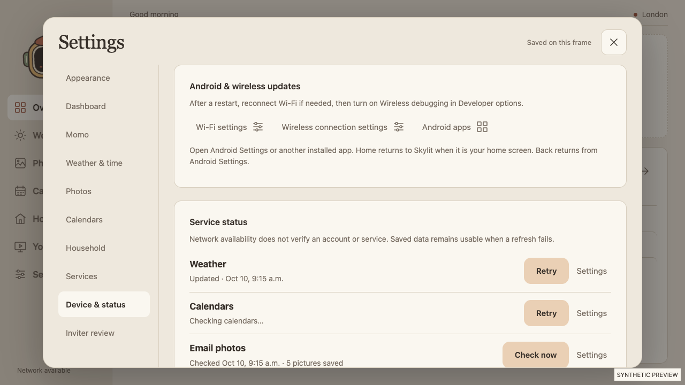
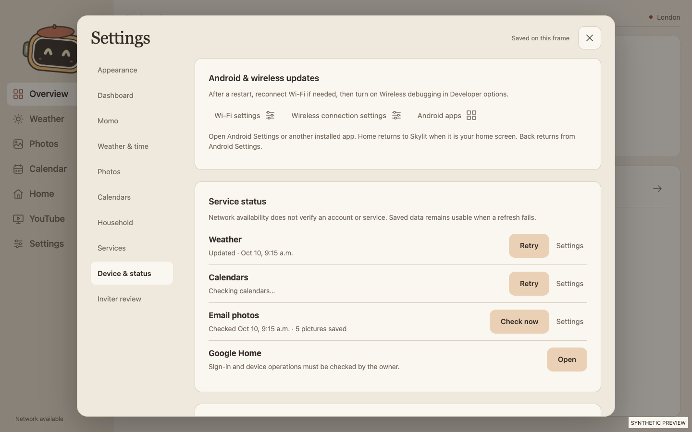
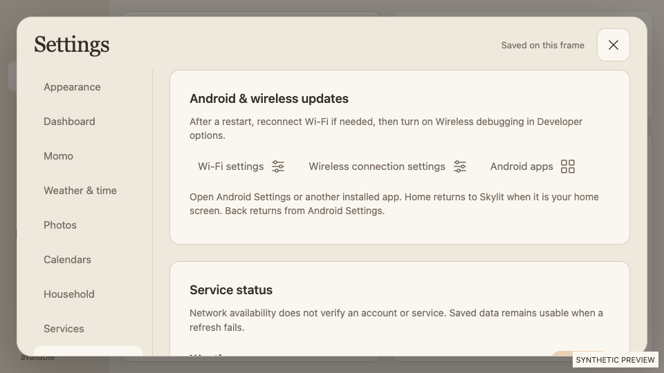

Android recovery shortcuts
Skylit 2.14.3 · October 11, 2026. Manual recovery after a restart, with controls kept inside Settings.
Where to go
Open Settings → Device & status → Android & wireless updates.
- Wi-Fi settings: reconnect Wi-Fi if needed after a restart.
- Wireless connection settings: open Developer options, turn Wireless debugging on, and approve the intended network if asked.
- Android apps: open a native app picker with Android Settings first, followed by other installed launchable apps.
The tested D156 firmware has no system navigation bar or standard app drawer. The picker provides an app-launching route that works on this frame. Android Home returns to Skylit when Skylit is configured as the home screen. Android’s Back action returns from Settings.
Wireless behavior
Paired TLS wireless debugging is enabled. A reboot test retained pairing but left Wi-Fi without an address and turned debugging off. Reconnecting Wi-Fi and approving Wireless debugging restored the connection. Permanent automatic recovery is not established; these shortcuts provide the requested manual recovery route.
No boot helper, firmware change, broad settings permission or authorization-expiry override was added. The existing Android pairing remains in place. To undo wireless access, turn Use wireless debugging off; forget this Mac to revoke its pairing.
Final cable-free acceptance passed: USB transport absent, paired TLS identity verified, signed APK installed and Skylit started over Wi-Fi. The updated private record was copied and verified over the same connection.
Verification
- 68 JavaScript and 15 Python tests passed.
- 32 rendered browser checks passed; final app-picker dispatch and visibility checked at 960×540, 1280×720 and 1440×900.
- Signed APK installed in place over verified USB, then successfully installed and started over paired TLS on the D156, Android 12, physical 1920×1080 and WebView 95. A final TLS install and launch also passed after the owner unplugged USB.
- Upgrade retained saved preferences and did not reopen setup.
- On-frame app picker opened Android Settings; Wi-Fi and Developer options shortcuts opened their Android routes. Back returned to the Settings lightbox.
- Private setup record copied to the frame’s Downloads folder and verified by SHA-256. Actual frame screenshots remain private.
APK version code 27; signature verification passed. SHA-256: e5bdd2c3e177107534ba16ec5722cc7bf851d40fb64790fbc38759a3f9432528.
Public source, complete Git history and final APK check: zero findings. Gitleaks scanned all 15 existing commits and a final public source export: zero leaks. Screenshots below use synthetic fixtures exclusively.
Frame canvas · 1280×720 CSS

Recovery controls appear first; service status remains below in the scrollable Settings content.Desktop landscape · 1440×900

Compact landscape · 960×540

Wireless setup and recovery instructions